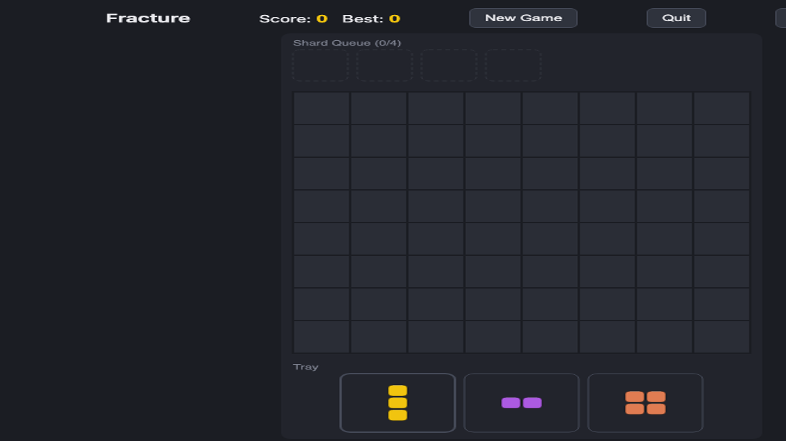

Fracture (working title)
In development · Web/CapacitorA Block Blast-style block-placement puzzle with one twist: clearing a line generates "shard" debris that scatters back onto the board instead of just disappearing. It turns the genre's usual externally-imposed bad luck (a piece drought you can't do anything about) into a visible, self-caused consequence you can actually see coming and plan around.

The core idea
- Clear a line, generate shards — 1–2 cell fragments, capped small on purpose, colored after the piece that made them.
- Shards queue up, they don't ambush you — they drain into future piece trays rather than dropping in instantly, so the cost is telegraphed, not a surprise.
- Can't be a cheap kill — a shard is only ever generated if it's guaranteed placeable somewhere, so the mechanic adds tension without being able to end your run on its own.
Where it stands
The shard mechanic has been validated with roughly 4,200 simulated games across five different bot strategies before any art or polish went in: zero of 590 recorded game-overs were caused by an unplaceable shard, confirming it reads as tension rather than punishment. A first art pass (movement, palette, board/tray look) has since been applied on top of that validated core, and the project has an Android build running on an emulator; real iOS/Android hardware verification is still an open step before this is ready to share as a build.
Still pre-release and iterating — no public build yet. The repo above tracks progress; this page will get a demo link once there's a build worth putting in front of people.